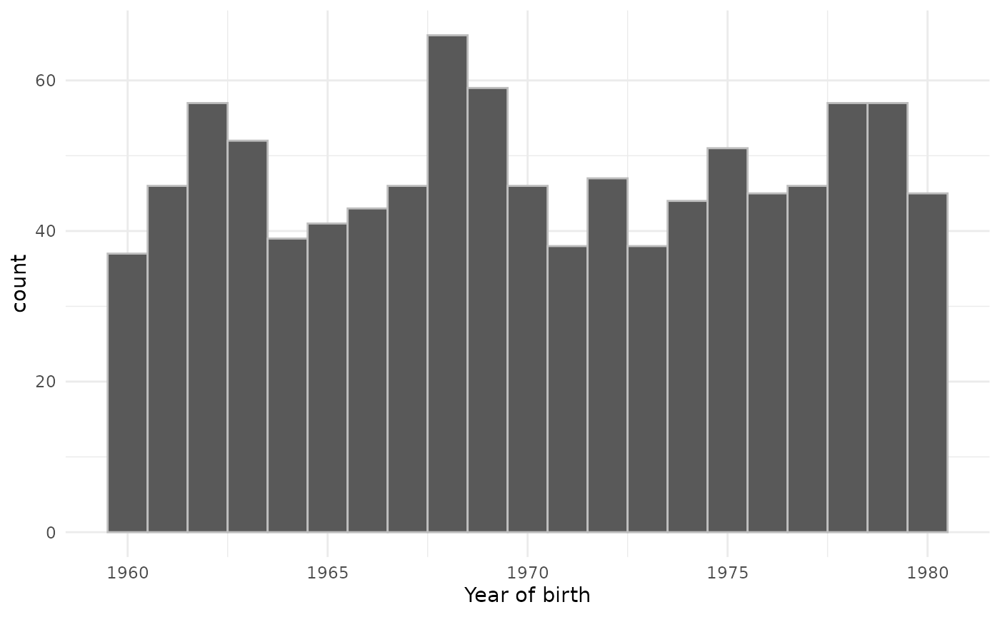

Creating synthetic clinical tables
Source:vignettes/a01_Creating_synthetic_clinical_tables.Rmd
a01_Creating_synthetic_clinical_tables.RmdThe omock package provides functionality to quickly create a cdm reference containing synthetic data based on population settings specified by the user.
First, let’s load packages required for this vignette.
Now, in three lines of code, we can create a cdm reference with a person and observation period table for 1000 people.
cdm <- emptyCdmReference(cdmName = "synthetic cdm") |>
mockPerson(nPerson = 1000) |>
mockObservationPeriod()
cdm
#>
#> ── # OMOP CDM reference (local) of synthetic cdm ───────────────────────────────
#> • omop tables: person, observation_period
#> • cohort tables: -
#> • achilles tables: -
#> • other tables: -
cdm$person |> glimpse()
#> Rows: 1,000
#> Columns: 18
#> $ person_id <int> 1, 2, 3, 4, 5, 6, 7, 8, 9, 10, 11, 12, 13,…
#> $ gender_concept_id <int> 8532, 8532, 8532, 8507, 8532, 8507, 8507, …
#> $ year_of_birth <int> 1991, 1998, 1981, 1956, 1985, 1961, 1982, …
#> $ month_of_birth <int> 10, 11, 5, 2, 2, 6, 1, 3, 2, 5, 3, 6, 2, 1…
#> $ day_of_birth <int> 15, 24, 22, 23, 9, 4, 3, 22, 28, 3, 26, 4,…
#> $ race_concept_id <int> NA, NA, NA, NA, NA, NA, NA, NA, NA, NA, NA…
#> $ ethnicity_concept_id <int> NA, NA, NA, NA, NA, NA, NA, NA, NA, NA, NA…
#> $ birth_datetime <dttm> NA, NA, NA, NA, NA, NA, NA, NA, NA, NA, N…
#> $ location_id <int> NA, NA, NA, NA, NA, NA, NA, NA, NA, NA, NA…
#> $ provider_id <int> NA, NA, NA, NA, NA, NA, NA, NA, NA, NA, NA…
#> $ care_site_id <int> NA, NA, NA, NA, NA, NA, NA, NA, NA, NA, NA…
#> $ person_source_value <chr> NA, NA, NA, NA, NA, NA, NA, NA, NA, NA, NA…
#> $ gender_source_value <chr> NA, NA, NA, NA, NA, NA, NA, NA, NA, NA, NA…
#> $ gender_source_concept_id <int> NA, NA, NA, NA, NA, NA, NA, NA, NA, NA, NA…
#> $ race_source_value <chr> NA, NA, NA, NA, NA, NA, NA, NA, NA, NA, NA…
#> $ race_source_concept_id <int> NA, NA, NA, NA, NA, NA, NA, NA, NA, NA, NA…
#> $ ethnicity_source_value <chr> NA, NA, NA, NA, NA, NA, NA, NA, NA, NA, NA…
#> $ ethnicity_source_concept_id <int> NA, NA, NA, NA, NA, NA, NA, NA, NA, NA, NA…
cdm$observation_period |> glimpse()
#> Rows: 1,000
#> Columns: 5
#> $ observation_period_id <int> 1, 2, 3, 4, 5, 6, 7, 8, 9, 10, 11, 12, 1…
#> $ person_id <int> 1, 2, 3, 4, 5, 6, 7, 8, 9, 10, 11, 12, 1…
#> $ observation_period_start_date <date> 2000-02-25, 2005-05-03, 1989-03-14, 201…
#> $ observation_period_end_date <date> 2015-06-30, 2007-07-21, 2019-05-19, 201…
#> $ period_type_concept_id <int> NA, NA, NA, NA, NA, NA, NA, NA, NA, NA, …We can add further requirements around the population we create. For example we can require that they were born between 1960 and 1980 like so.
cdm <- emptyCdmReference(cdmName = "synthetic cdm") |>
mockPerson(
nPerson = 1000,
birthRange = as.Date(c("1960-01-01", "1980-12-31"))
) |>
mockObservationPeriod()
cdm$person |>
collect() |>
ggplot() +
geom_histogram(aes(as.integer(year_of_birth)),
binwidth = 1, colour = "grey"
) +
theme_minimal() +
xlab("Year of birth")